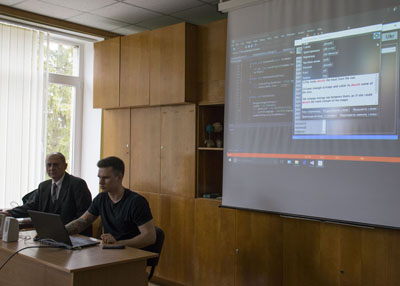
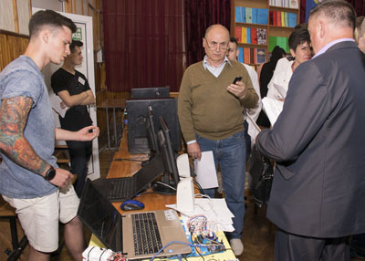
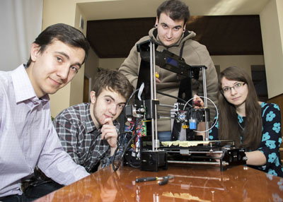
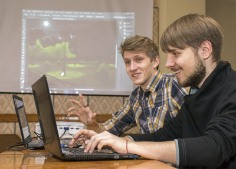

|
Галузь знань |
12 Інформаційні технології |
|
Спеціальність |
123 Комп’ютерна інженерія |
|
Спеціалізація |
Обслуговування комп’ютерних систем і мереж |
|
Термін навчання |
3 роки 10 місяців |
|
Кваліфікація |
молодший спеціаліст технік з обчислювальної техніки |
Діяльність молодшого спеціаліста пов’язана з проектуванням, створенням та обслуговуванням комп’ютерних систем та мереж, розробкою системних та прикладних програм в рамках функціонального, процедурного та об’єктно-орієнтованого підходу для настільних, портативних, вбудованих та хмарних систем;
Освітня програма підготовки студентів повністю відповідає рекомендаціям спеціальної комісії АСМ/ІЕЕЕ - CS (The Association for Computer Machinery / The Institute of Elеctrical and Electronics Engіnееrs - Computer Society) - світового авторитета з питань розробки навчальних планів та програм у галузі компютерної інженерії. Вона також погоджена з відповідними навчальними програмами кращих технічних університетів України, що дає можливість випускникам отримати освітньо-кваліфікаційний рівень «бакалавр» за скороченим терміном(2 роки).
Навчальні дисципліни програми забезпечують формування критичного, логічного та творчого мислення, професійних компетентностей, необхідних для успіщного працевлаштування. Особливостями програми є вивчення англійської мови (розмовної та технічного перекладу) протягом усіх років навчання та безперервність підготовки з математики, комп’ютерної інженерії і програмування.
IT-індустрія — сфера діяльності, яка найінтенсивніше розвивається в Україні останніми роками
На сьогодні більше 100 тисяч українських програмістів працюють у різних компаніях, при цьому, попит на IT-персонал продовжує зростати на світовому ринку. Про це пише профільне видання IT Outsoursing News(10). У матеріалі йдеться, що навіть попри політичну нестабільність українські послуги ІТ та програмного забезпечення для Research&Development з кожним роком набирають обертів.
Зараз Україна має найбільшу кількість IT-фахівців в Європі і це число продовжує зростати. Дослідження показують, що до кінця 2020 кількість фахівців з України перевищить 200 тисяч осіб.
Працюючи на експорт, наші спеціалісти видають якісний продукт і отримують за місяць оплату, яку середньостатистичний українець спроможний заробити лише за рік. Утім, і держбюджет від цієї галузі отримує чималі гроші. 2,5 мільярдів гривень заробила Україна на експорті IT-індустрії тільки у 2015 році. Щороку IT-сектор зростає на 25%.
За надходженнями до бюджету ІТ-індустрія посідає третю сходинку, поступаючись лише агросектору і металургії.
За конкурентоздатністю в IT Україна посідає 51-шу сходинку у світі. Середня зарплата працівника IT-сфери в Україні 2,5 тисяч доларів.
Завдання підготовки високопрофесійних кадрів, здатних розвивати IT-сферу є стратегічним для країни. Для вирішення цього завдання потрібно так організувати національну систему ІТ-освіти, щоб повністю забезпечити постійно зростаючу потребу ІТ-індустрії в в якісних фахівцях.
Разом з тим дефіцит фахівців у галузі інформаційних технологій в Україні становить 30 %. Ці дані оприлюднив голова Держінформнауки Володимир Семиноженко. При цьому він зазначив, що, незважаючи на такий дефіцит, знайти роботу в ІТ-компаніях можуть лише 25 % випускників – інші не відповідають вимогам за рівнем своєї кваліфікації [2].Тобто 75% підготовлених фахівців, на навчання яких на протязі 4-5 років тратяться кошти в тому числі і з державного бюджету непридатні для роботи в ІТ сфері. Отже, дефіцит фахівців у сфері ІТ збільшуватиметься. Тому, підготовка ІТ-спеціалістів, кваліфікація та рівень компетенцій яких відповідають сучасним потребам ІТ-ринку та світовим вимогам, є насущною проблемою.
Залучення студентів до виконання проектів в процесі навчання
Викладачі випускової циклової комісії спеціальності «Комп’ютерна інженерія» спільно з керівниками ІТ- компаній постійно шукають шляхи підготовки фахівців, які зможуть відразу після закінчення коледжу стати ефективними учасниками в розробці ІТ-проектів.
Один з таких шляхів – у роботі над проектами вже на початкових курсах визначиться професійна придатність студента та його спеціалізація в одному з напрямків ІТ -індустрії. Тому більшість викладачів комісії в педагогічній діяльності ефективно застосовують метод проектів.
Застосування проектної технології в підготовці молодших спеціалістів за спеціальністю «Комп’ютерна інженерія» дає можливість підготувати студента до виконання реальних ІТ-проектів за замовленнями роботодавців. Таке навчання, орієнтоване на студента, в основі якого є компетентнісна модель фахівця (профіль), створена за найактивнішої участі, поряд із викладачами, роботодавців ІТ-компаній, професійних організацій тощо. А це є основою студентоцентрованого навчання, в якому закладено ідею максимального забезпечення студентам шансів отримати перше місце роботи на ринку праці, підвищення їхньої «вартості» у роботодавців (придатності до працевлаштування), задоволення тим самим актуальних потреб останніх.
Важливим каталізатором цієї роботи є досить великий обсяг практик в програмах підготовки молодшого спеціаліста. Ми готуємо практико - орієнтованих молодших спеціалістів . Наші навчальні програми (як і навчальні програми Fachhochschule (FH ) у Німеччині ) включають 6-7 семестрів теоретичної підготовки і відповідно 2-1 ( в сумі 8 семестрів) семестру практики . Побудовані вони таким чином , щоб випускники були максимально підготовлені через систему тісних зв'язків з промисловістю для роботи за фахом на первинних інженерних посадах. Промисловість , а особливо ІТ -сфера дуже радо сприймають наших випускників, тому що вони вже готові до практичної діяльності. Велика складова практичного навчання дозволяє студентам виконувати реальні проекти під час практик , курсового та дипломного проектування, і таким чином готувати себе до реальної проектної діяльності в ІТ- фірмах.
|  |  |
|  |  |
Продовження навчання в університетах
Високий рівень підготовки випускників спеціальності «Обслуговування комп'ютерних систем і мереж» дозволяє їм продовжувати навчання у Вінницькому національному технічному університеті ( ВНТУ ) за фахом «Комп'ютерна інженерія» та у Донецькому національному університеті (ДНУ) за фахом «Комп’ютерні науки та інформаційні технології» на різних формах навчання: з відривом і без відриву від виробництва. Відповідно до розробленого в рамках «Положення про освітньо -кваліфікаційні рівні (ступеневу освіту» , спільно з Інститутом інформаційних технологій та комп'ютерної інженерії ВНТУ навчальним планом , вже протягом чотирьох років діє система підготовки бакалавра на основі освітньо- кваліфікаційного рівня молодший спеціаліст за два роки. . Це дає можливість випускникам коледжу за три роки отримати повну вищу освіту, що в свою чергу дозволяє поповнювати вітчизняний ринок кваліфікованими ІТ- фахівцями швидше і з меншими витратами коштів , у тому числі й державних. Причому , це мотивовані молоді люди , які з 15 років (вік вступу до технікумів , коледжів) пройшли професійну орієнтацію та професійну підготовку на рівні молодшого спеціаліста, готові до проектної діяльності та усвідомленого, цілеспрямованого продовження навчання за обраною спеціальністю . Вони зацікавлені у підвищенні рівня знань і професійної майстерності в створенні продуктів ІТ- технологій , тому що багато хто вже працюють в ІТ -компаніях, де заробітна плата прямо залежить від здібностей і рівня кваліфікації. За чотири останніх роки продовжили навчання в ВНТУ та ДНУ за скороченим терміном навчання 152 наших випускники.
Індивідуальний підхід до навчання
У рамках проектної технології навчання ефективно використовуємо індивідуальний підхід до підготовки студентів. Направляємо і даємо можливість розвиватися студентам в тому напрямку ІТ , який їм більше до душі , в якому вони показують кращі результати. Як говорив Стів Джобс: «Єдиний спосіб домогтися успіху - любити те , чим ви займаєтеся». Таким чином з багатьох напрямків ІТ маємо сильних студентів тому можемо виконувати ІТ- проекти різних напрямків.
Досягнення наших студентів
Успіхи в навчанні при використанні « методу проектів » демонструють вагомі досягнення наших студентів, які брали участь в олімпіадах з ІТ різних рівнів: обласних , всеукраїнських , міжнародних . За результатами щорічної обласної олімпіади з інформатики серед ВНЗ І-ІІ рівнів акредитації з 2007 по 2016 наші студенти є переможцями, а в 2008 -2011 та 2017 роках були переможцями та призерами Всеукраїнської олімпіади з інформатики серед студентів ВНЗ I - II рівнів акредитації. У 2012 році за результатами I Міжнародного бліц- конкурсу з веб- дизайну та комп'ютерної графіки наші студенти зайняли I і II місця, а 17 травня 2013 року 3 студенти коледжу стали призерами XI Міжнародного конкурсу з Web- дизайну та комп'ютерної графіки, на який було подано більше 1000 робіт з двадцяти країн світу.
Після закінчення конкурсу одному з наших переможців надійшло замовлення від громадської організації «Форум» на створення анімаційної роботи на тему гендерної рівності в політиці. Аналізуючи цей досвід можна також виходити на ринок аутсорсингу по створенню різнотипного анімаційного контенту
У листопаді 2013року на базі Вінницького національного технічного університету проходив широкомасштабний конкурс з інформаційних технологій – REVOLUTION 2013.У конкурсі приймали участь студенти ВНЗ ІІІ-IV рівнів акредитації а також студенти нашого коледжу.У трьох номінаціях з п’яти наші студенти вибороли призові місця:третє місце в номінації програмування, перше місце в номінації Web, друге та третє місця в номінаціх 2D, уступивши у цих номінаціях тільки студентам університету.
15 березня 2015 року у Вінницькому національному технічному університеті відбувся вже традиційний другий Міжнародний зимовий бліц-конкурс з веб-дизайну та комп'ютерної графіки серед студентів та студентів. На оцінювання було надіслано понад 250 робіт з різних країн світу. За результатами конкурсу наші студенти вибороли в номінаціях:"Краща 2D-растрова графіка" - 3 місце, "Краща 2D-растрова графіка (фотомонтаж)" - 2 місце, "Краща 3D-графіка" - 1 місце, "Краща Flash-анімація" - 1 місце;
Cтудент Буковський Микита прийняв участь в міжнародній студентській олімпиаді IT-Universe-2014/15 і зайняв друге місце в конкурсі «3D-графіка на тему «Вместе создадим ИТ-вселенную»»
Cтуденти Ковалик Володимир, Буковський Микита, Загорський Максим прийняли участь в міжнародній студентській олімпиаді IT-Universe-2015/16 і зайняли друге місце в конкурсі «3D-графіка на тему «Вместе создадим ИТ-вселенную»
Cтудент Петрук Вадим прийняв участь в міжнародній студентській олімпиаді IT-Universe-2015/16 і зайняв перше місце в конкурсі «Цифрове відео на тему «Вместе создадим ИТ-вселенную»»
Cтудентка Махновецька Наталія зайняла ІІІ місце у ІІ зимовому Міжнародному зимовому бліц-конкурсі з веб-дизайну та комп’ютерної графіки серед студентів та учнів в номінації 2D-растрова графіка.
Команда у складі студентів: Брюханов Володимир, Василенко Микола, Черната Максим зайняла ІІ місце у І етапі Всеукраїнської студентської олімпіади з програмування.
У 2015 році дипломний проект Коваля Михайла та Ващука Максима «Автоматизована система управління навчальним процесом у Вінницькому технічному коледжі» , зайняв перше місце у здобутті гранту Вінницької обласної ради та Вінницької обласної державної адміністрації.
Складові успіху в підготовці фахівців на компютерному відділенні :
Хроніка
Вінницький технічний коледж завжди готував спеціалістів для самих сучасних галузей виробництва. Ще у 70-х роках Вінницький технікум електронних приладів готував спеціалістів зі спеціальностей “Електронні обчислювальні машини”.
Масова інформатизація радянської освіти почалася в 1985 році, після державної реформи освіти 1984 року і введення в її рамках нового навчального предмета «Основи інформатики та обчислювальної техніки». Навесні 1985 було прийнято постанову «Про заходи щодо забезпечення комп'ютерної грамотності учнів середніх навчальних закладів та широкого впровадження електронно-обчислювальної техніки в навчальний процес». З вересня 1985 року в навчальні плани усіх спеціальностей була введена дисципліна «Основи інформатики та обчислювальної техніки».
В 1985-86 роках викладачі комісії Рибаченко В. Ю., Колесник А. І., Мірочник Я. Д. навчались в Московському інституті електронної техніки Міністерства електронної промисловості СРСР. З 1985 року циклова комісія отримала назву: комісія інформатики та обчислювальної техніки. Викладачі комісії забезпечували також викладання нової дисципліни «Основи інформатики та обчислювальної техніки». Комісія поповнилась молодими викладачами Мудрою Л. А. та Колесник І. В. Також до викладання нового предмета «Основи інформатики та обчислювальної техніки» були залучені викладачі математики Томілова В. Є., Васєчкіна А. О., Ракіцька В. Д. Крім ДВК-1, ДВК-2М для проведення лабораторних і практичних робіт використовувались програмовані мікрокалькулятори Б3-34, МК-52.
В 1986 році була створена науково-методична комісія з питань інформатизації середніх спеціальних навчальних закладів Міністерства вищої та середньої спеціальної освіти СРСР, до складу якої ввійшли науковці, директори та викладачі провідних навчальних закладів СРСР. До складу комісії увійшли директор технікуму Домінський О. С. та викладач Колесник А. І. Комісія проводила наукові конференції, виставки, семінари, олімпіади, надавала методичну допомогу навчальним закладів різних регіонів СРСР з питань інформатизації освіти. В 1988 на базі технікуму була проведена Всесоюзна конференція з питань інформатизації освіти під егідою Міністерства вищої та середньої спеціальної освіти СРСР. В конференції прийняли участь представники навчальних закладів різних регіонів СРСР. У виступах прийняли участь також викладачі технікуму Домінський О. С., Колесник А. І., Беренштейн Д. М.
В 1987 році створено методичне об´єднання викладачів інформатики середніх спеціальних навчальних закладів Вінницької області, головою призначений викладач Колесник А. І.
Силами викладачів Рибаченка В. Ю., Мірочника Я. Д., Колесника А. І. Мудрої Л. А., Колесник І. В. було розроблено методичне забезпечення для ефективного використання наявної обчислювальної техніки в підготовці кваліфікованих випускників. Випускники тих років з гордістю згадують, що безумовною їх перевагою при влаштуванні на роботу було відмінне володіння комп’ютером. Не випадково багато з них,незважаючи на те, що спеціальність за дипломом у них інша, працюють в сфері інформаційних технологій на території України та за кордоном. Серед них директори комп’ютерних фірм Шостацький А. А., Прокопчук О. В., Кордон В. А., програміст Шарабура Р. І. та інші.
Щорічно в технікумі проводяться олімпіади з інформатики та обчислювальної техніки. Учні технікуму під керівництвом викладачів Колесника А. І., Мірочника Я. Д. стають неодноразовими переможцями та призерами Галузевих та Всесоюзних олімпіад з інформатики.
Викладачі комісії ефективно працюють над розробкою та створенням навчально-лабораторних стендів з обчислювальної та мікропроцесорної техніки. В 1989 році голова циклової комісії Рибаченко В. Ю. створив кооператив, який розробляв та виготовляв навчальні стенди за замовленнями навчальних закладів СРСР.
В 1993 році головою циклової комісії була призначена Колесник І. В. Продовжилось поповнення лабораторій та кабінетів комісії обчислювальною технікою наступних поколінь. Викладачі комісії розробляють навчально- методичне та програмне забезпечення для використання комп’ютерів у навчанні.
В 1995 році, після зміни практично всіх спеціальностей та напрямків підготовки в коледжі, комісія інформатики та обчислювальної техніки під керівництвом голови комісії Колесник І. В. продовжила активну роботу направлену на розвиток навчально-матеріальної бази, створення методичного та програмного забезпечення нових дисциплін «Інформатика та обчислювальна техніка», «Інформатика та комп’ютерна техніка» які входили до навчальних планів підготовки молодших спеціалістів з нових спеціальностей. Були створені нові комп’ютерні лабораторії: 208, 14. В курсі «Основи інформатики та обчислювальної техніки» почали вивчати мову програмування Pascal. До складу комісії увійшли викладачі Загоруйко Л. В., Довгань Д. Ю. Вернигора В. В.
В 2001 році циклова комісія прийняла активну участь в підготовці матеріалів до ліцензування спеціальності «Обслуговування комп’ютерних та інтелектуальних систем і мереж». Після отримання ліцензії, у 2002 році, проведений перший набір студентів на навчання за новою спеціальністю. Розпочалась нова віха історії циклової комісії – вона стала випусковою цикловою комісією по забезпеченні підготовки молодших спеціалістів зі спеціальності «Обслуговування комп’ютерних та інтелектуальних систем і мереж». Головою комісії призначений викладач Колесник А. І. Циклова комісія розпочала роботу по створенні навчально - матеріальної бази, методичного та програмного забезпечення 19 нових дисциплін, які входили до навчальних планів підготовки молодших спеціалістів з нової спеціальності. Проводилась активна кадрова робота з метою поповнення комісії кваліфікованими викладачами. Членами комісії стали молоді викладачі Кисюк Д. В., Трояновська Т. І., Трофімчук О. А., Овчар І. М.
В 2006 році випускова циклова комісія підготувала матеріали та успішно пройшла акредитацію спеціальності «Обслуговування комп’ютерних та інтелектуальних систем і мереж». За результатом акредитації коледж отримав від Міністерства освіти і науки сертифікат про акредитацію.
З 2006 року голова комісії Колесник А. І. є експертом МОН України за спеціальністю «Обслуговування комп’ютерних та інтелектуальних систем і мереж».
З 2007 по 2014 рік щорічно проводиться обласна та Всеукраїнська олімпіади з інформатики серед студентів ВЗО 1-2 рівнів. Студенти комп’ютерного відділення під керівництвом викладачів комісії Колесника А. І. , Овчара І. М. на протязі всіх років були переможцями обласних олімпіад, та 5 разів переможцями та призерами Всеукраїнських олімпіад.
З 2010 року введені нові стандарти підготовки молодших спеціалістів за спеціальністю 5.05010201 «Обслуговування комп’ютерних систем та мереж».
Викладачі комісії прийняли активну участь в розробці нового навчального плану та навчально-методичного забезпечення дисциплін.
На основі галузевих стандартів вищої освіти спеціальності 5.05010201 «Обслуговування комп’ютерних систем та мереж» галузі знань 0501 «Інформатика та обчислювальна техніка» комісією розроблена варіативна компонента освітньо-кваліфікаційної характеристики та освітньо-професійної програми (ОКХ і ОПП), структурно-логічна схема підготовки молодшого спеціаліста, концепція спеціальності, засоби діагностики якості освіти.
З 2010 року випусковій цикловій комісії дано назву «Інформатики та інформаційних комп’ютерних технологій».
У 2010-11 навчальному році головою випускової циклової комісії Колесником А. І. та завідуючим комп’ютерним відділенням Колесник І.В. спільно з Вінницьким національним технічним університетом були розроблені інтегровані навчальні плани за якими наші випускники отримують у ВНТУ освітньо –кваліфікаційний рівень бакалавра за два роки. За три роки продовжили навчання у ВНТУ за скороченим терміном навчання більше 100 наших випускників.
Щорічно на базі коледжу проводиться обласна виставка творчих робіт викладачів та студентів ВЗО I - II рівнів акредитації Вінницької області. Одним з напрямків є інформаційні технології (ІТ), де циклова комісія «Інформатики та інформаційних комп’ютерних технологій» представляє щорічно більше 100 цікавих проектів і творчих робіт з різних напрямків ІТ: веб -сторінки, бази - даних, анімації та анімаційні фільми, презентації, програми, вироби на мікроконтролерах, відеофільми. Протягом 8 років за результатами виставки багаторазово відмічені дипломами творчі проекти студентів під керівництвом викладачів комісії Колесника А.І., Бортніка В.М., Колесник І.В. Богомолова С.В.
Науково-дослідницька робота викладачів комісії є одним з найважливіших шляхів підвищення якості підготовки молодших спеціалістів.
Сферою наукових інтересів викладачів є дослідження у галузі комп’ютерних наук, зокрема: інтерактивні інформаційно-комунікаційні технології навчання, елекронні бази даних і знань, цифрові пристрої на мікроконтролерах, розробка прикладних програм , розробка Веб-ресурсів, 2D та 3D графіка. Слід відмітити публікації в наукових виданнях викладачів: Колесника А.І., Загоруйко Л. В., Трояновської Т.І., Богомолова С.В., Колесник І.В.